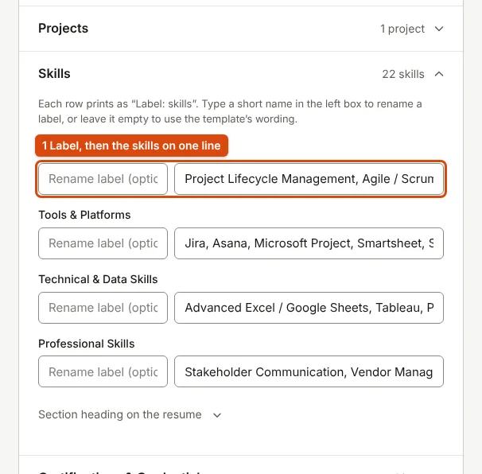

How to Write the Skills Section of a Resume
A skills list is a promise. Group it, order it by the job, and include only what you could show in an interview.
What the skills section is for
It lets a reader see in a few seconds whether you have the tools and methods the role needs, and gives search software specific terms to find. It works when it is specific, grouped and true. The National Careers Service's advice for tailoring applies directly: "you could highlight skills you have that they have asked for" (How to write a CV).
Group skills under short labels
One long comma-separated list is hard to scan. Group skills under labels so the reader finds the relevant group at once. The builder prints each row as "Label: skills", and every label can be renamed.

| Role type | Example groups |
|---|---|
| Software or data | Languages: Python, SQL. Frameworks: Django. Tools: Git, Excel |
| Accounts | Accounting: GST, TDS, bank reconciliation. Software: Tally, Excel |
| Marketing | Channels: SEO, email. Tools: Google Analytics, Canva |
| Operations or support | Operations: scheduling, vendor coordination. Tools: Excel, a CRM |
| Core engineering | Design: AutoCAD, SolidWorks. Analysis: MATLAB |
These are examples of grouping, not lists to copy. Put in only what you have used.
Order and length
- Put the groups and skills the advert names first; tailoring your resume shows how to find them.
- Within a group, strongest first rather than alphabetical.
- Keep it to the skills you could discuss in an interview. A very long list reads as padding and invites questions you cannot answer.
Hard skills, soft skills and levels
Tools, languages and methods belong in the skills section because they are specific. Soft skills such as "team player" are weak as a list, because anyone can write them; show them in a bullet instead, for example "Led a team of 15 volunteers". The STAR method, which the National Careers Service recommends for CVs as well as interviews, is a good way to write that evidence: situation, task, action, result (The STAR method).
Avoid skill bars and percentages such as "Python 80%": a reader cannot tell what 80% means, and text extraction cannot read a bar. If a level helps, use words: "Advanced: SQL; Working knowledge: Tableau". List spoken languages with a level (native, fluent, professional, conversational); the builder has a Languages section for this.
The interview test: for each skill, could you answer two practical questions about it and give an example? If not, remove it, or list it honestly under "Familiar with".
Common mistakes
- Listing what everyone has, such as "Internet" or "Email". Keep "Excel" if you use it well, and name the feature (pivot tables, VLOOKUP).
- Misspelling tool names: JavaScript, GitHub, PostgreSQL.
- Putting skills in a table or an image, which text extraction may skip; see will an ATS read your resume.
- Keeping tools you have not used for years.
To see a skills section in the context of a whole resume, look at fresher resume examples by role, and build yours in the resume builder.
Sources
- National Careers Service (UK): How to write a CV, UK government careers service; quoted where its advice applies to applications in India
- National Careers Service (UK): The STAR method
Measurements on this page come from running ApplyReady's own tools on the synthetic test images described in the editorial policy. Found a mistake? Report an error.